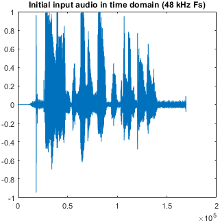
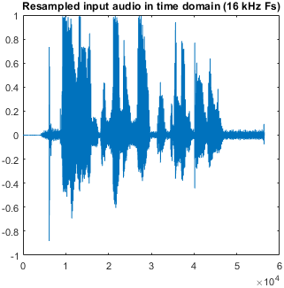
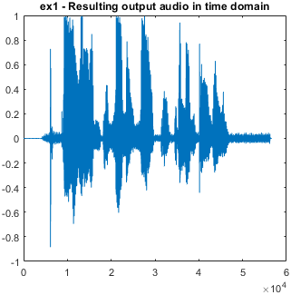
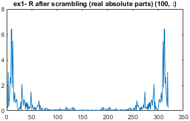
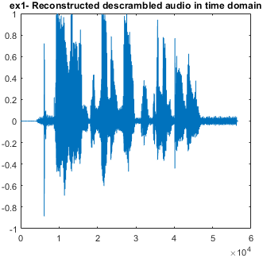
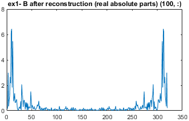
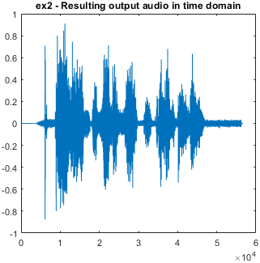
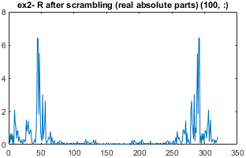
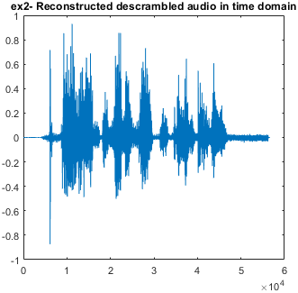
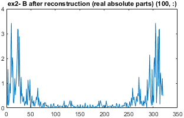

320 samples instead of 960; samples 1-56 and 265-320
Image resolution for plots: 300
Fs = 16000, Fc = 0.875
Original audio at 48 kHz: | Resampled audio at 16 kHz: |
 |  |
| Config | Scrambling | Reconstruction |
|---|---|---|
| [0 1 2 3 4 5 6 7] |   |   |
| [5 4 7 6 2 3 1 0] |   |   |